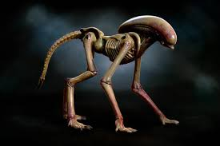
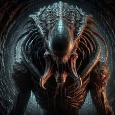
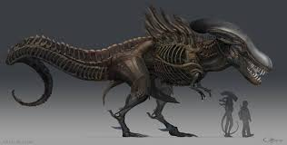
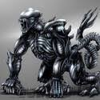

There are hundreds of thousands of xenomorph variants. Each Varient mainly originates from the host. A xenomorph takes features from the host so if a facehugger were to land on a human it would create a human based xenoimorph (the classic.) if a xenomorph landed on a dog or an ox it would create a quadropedal type of xenomorph that really only runs on 4 legs. Some great examples of a variant xenomorph come from many adaptations, movies (Alien 3,AvP Requium) video games (Mortal kombat X) and many many comic books.

Runner xenomorph (from dog)
image by mitkoogrozev from DeviantArt
A predalien is created in a cross over film called alien vs Predator. In thge film a facehugger lands on the face of a predator creating the predalien, The predalien is like a mini queen and can lay xenomorphs through peoples mouths

image by Gronono57 from DeviantArts
If a facehugger were to latch onto a crocadile it would create a very large, bulky, agressive xenomorph.

image by arvalis from DeviantArts
finally if a facehugger would lnd onto a gorrilla it would create an extremely stong xenomorph.

image by X-RaD From DeviantArt
This franchise is all about exploring the unknown, creating new things, taking risks. These variants show that. These variants how the imagination of the fans and the whole production. There are probably billions of varians that I can go over. Its your time to go over them... create something new, a fish, a bird. Explore the unknown. -Carter Gianino